This is unfortunately not a tutorial to teach you to create prototypes of ideas in electronics but more an overview with some keys steps that allowed the build of this cool gadget. My idea came because I wanted an electronic device capable after a while to turn on, to start a light, a sound, a computer.
Especially since to take a break on screen, when I do electronics it is always without programming the chips. So these are chips with integrated factory program. I don’t do Arduino, and programmable chips currently though having played with some STM32.
Paper preparation schemes, prototyping on a breadboard, circuit adaptability to perfboard, welding, and debugging will be discussed.
Steps
The idea
The scheme
The prototype
The device
Material
General
Pen and paper
Breadboards
Perfboards
Battery
Multimetter
Soldering iron
Components
7 segment display
Counter 4026B
555 timer
Switch button
LEDs
Passive buzzer
Resistors
Capacitors
Transistors
Dip socket
And more!
The necessary matetial for this project
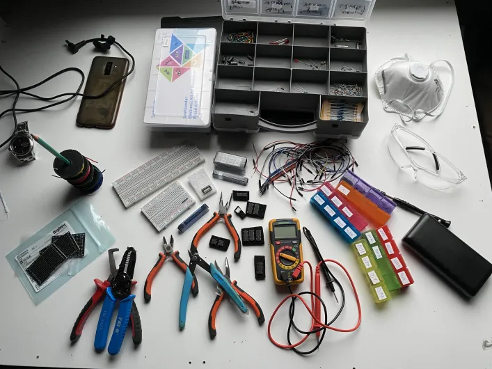
The idea
The idea is to create a gadget allowing us to count from 0 to 9, it will need a counter (e.g. 555 timer), a display 7 segments and make an oscillator. For the control of the 7 seg display one can use the counter CD4026B. Several LEDs and a passive buzzer will be necessary to display the status of the counter (ready - finished).
The scheme
So here is the first schema of the 7 segment display and timer 555 as well as that of the counter 4026B are really these three chips that allow the whole system.
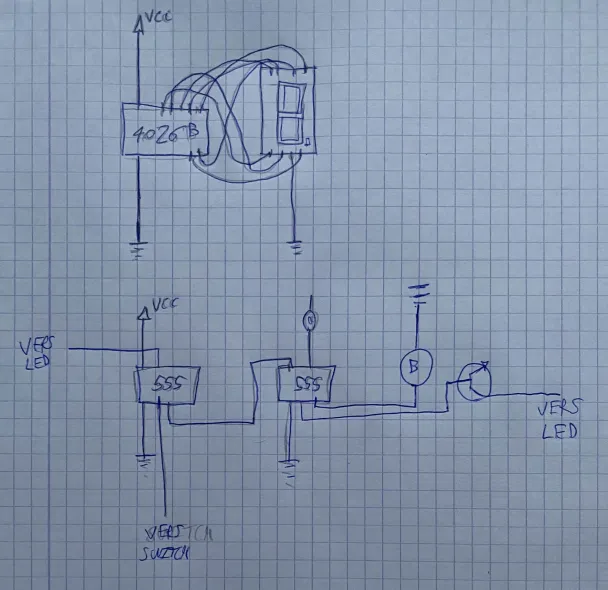
As previously mentioned, we won't go into specifics because we're not in a tutorial but rather a demo. Here is the general schema. The 4026B counter is responsible for controlling the 7 segment display. In the second part of the schematic, we have two 555 chips that will work in astable mode to produce an oscillation that will be transmitted to the 4026B, resulting in a clock frequency that allows for the display of figures on the 7-segment display. Additionally, one of the 555 will be governed in monostable mode, which will permit impulsion after a specific amount of time. By placing a transistor in NOT gate mode, we can reverse this impulse. The LED will be activated first and turn off at the end of the countdown. A second LED will be lit when the first one turns off, indicating when the counter is ready to be used. The first LED will indicate when the counter is ready to be used, and the second LED will indicate when the countdown has finished by staying on. Finally, a characteristic TIC-TAC sound (yes it's fun) will be produced by setting a passive buzzer to the clock frequency.
The prototype
Now it’s time to put all this on a breadboard. Not evident to make everything hold. We can spread on 2 breadboards and then compact the circuit on one.
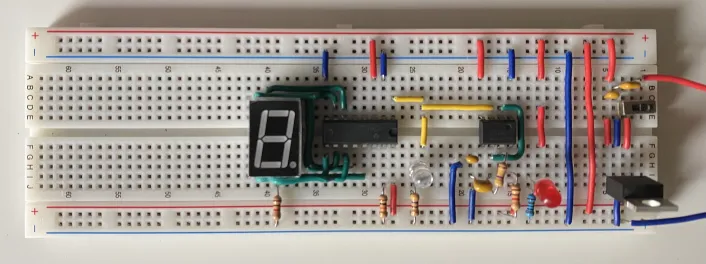
The prototype fit in one breadborad. But additional components are required to make the second LED blink in rythm with the timer.
Let's extend the prototype.
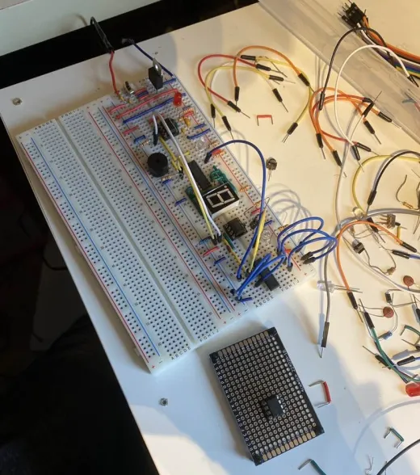
Zooming the circuit
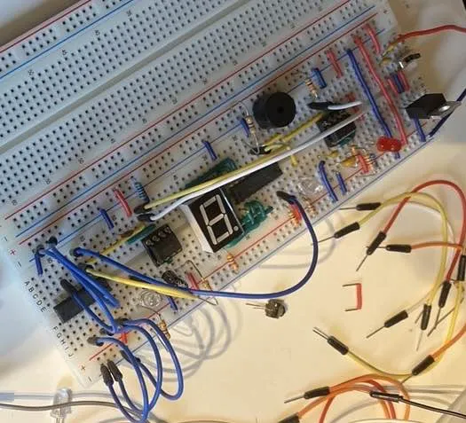
I came with a smaller one prototype who was ultra compacted.
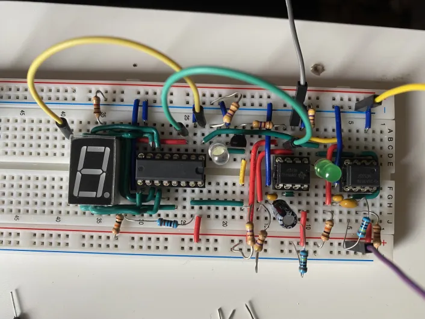
After many debugging everything seems ready. Time to test the system.
The circuit works well but now we face another difficulty putting all in a single perfboard. Perfboard are really small 4*6 cm (1.57 * 2.36 inch).
The device
The challenge of fitting everything onto a single small size perforated board.
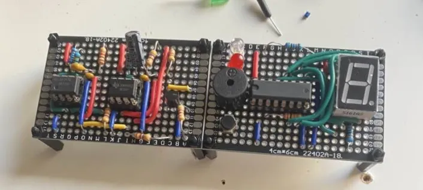
I initially considered adding another one to the side. But unfortunately it would have led to a gadget too cumbersome and not practical.
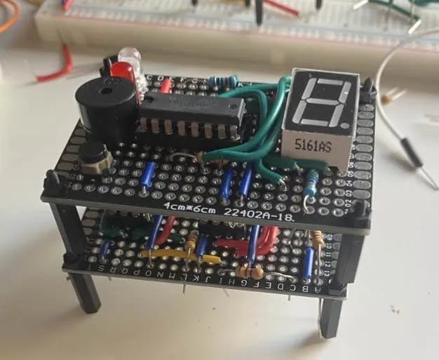
That's where I first thought of putting down the performance boards. On the first floor, you can find the timer part of the circuit with its two 555s. The circuit's second stage is all about the display, with a 7-second display, counter 4026B, LEDs, and buzzer. This will be useful when we will do a box for this gadget. The logic part below and the display part above. The display can be placed in the appropriate spot.
The last step was to solder all of this. And this was not a part of pleasure. But this give this awesome gadget.
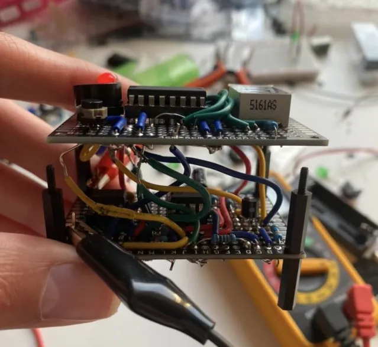
From a practical point of view it is important to leave the spacers open before compacting everything. Otherwise if an error is found during the debugging phase it will be necessary to redo everything.
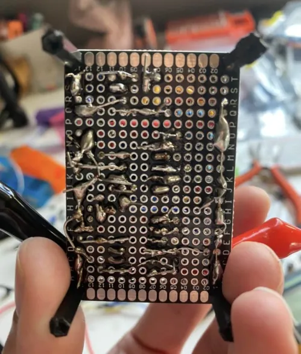
After many hours of endless debugging with the multimetter, the gadget is ready and can be compact and closed.
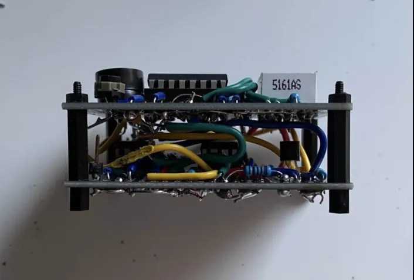
We can observe the many connections leading quickly to confusion. It is therefore better to move on to a PCB model.
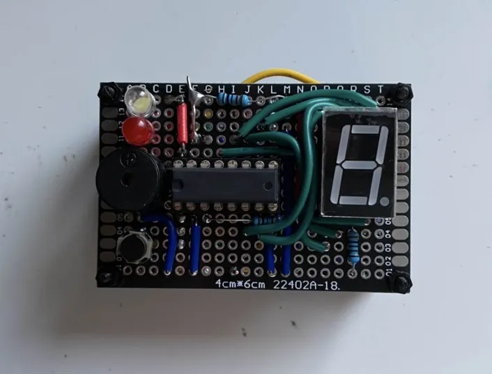
The final device is now ready for testing!
Let's start the counter.
And in the night for a better feeling!
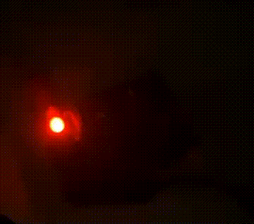
That’s how magical it is to understand the pre-programmed chips and use them in a circuit. No need to program anything. It is possible to take a break away from the screens while practicing a passion.
Notes
For a first program, it was quite difficult due to the reasons cited in the challenge.
The offset depends on the power of the current source. With new (more powerful) batteries the counter will go faster and therefore overflows on the timer. I learned it on the fact. Whereas with used batteries the counter counts perfectly because less current and slower circuit. Finally set to 9V or 5V DCC the counter counts once and turns off!
Conclusion
This concludes this overview of counterByte a nice trigger counter. To improve it there is a way to add a trigger at the end of the counter and even redo the whole circuit on PCB in order to fit it into a box. For a first circuit I’m quite delighted with the result. Although very difficult to obtain, the road was not easy.